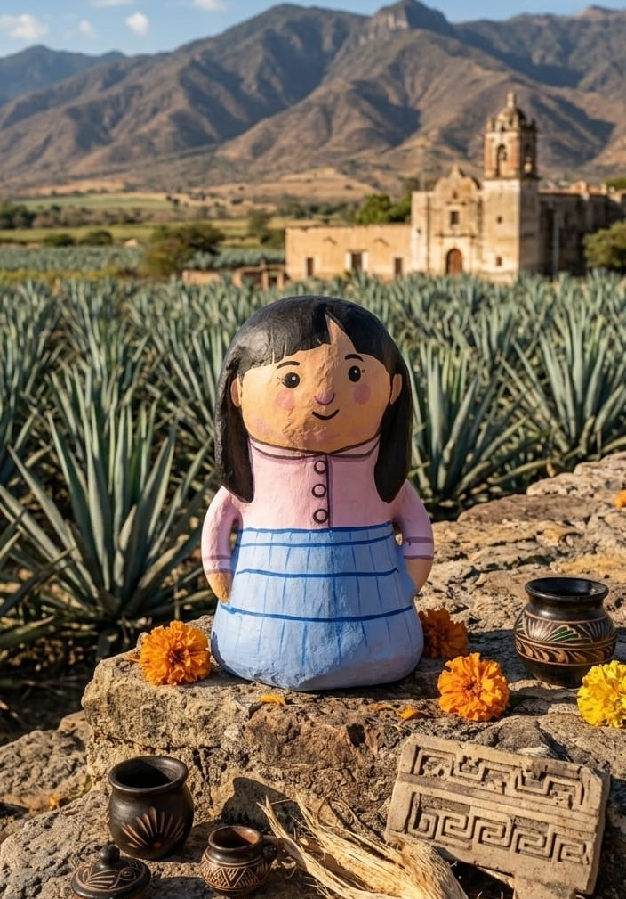
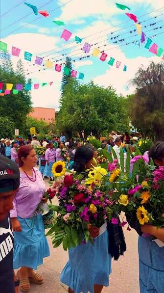
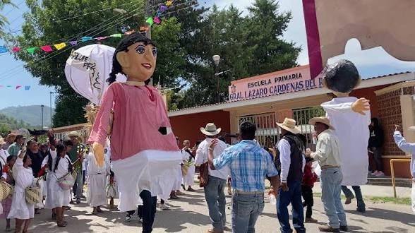
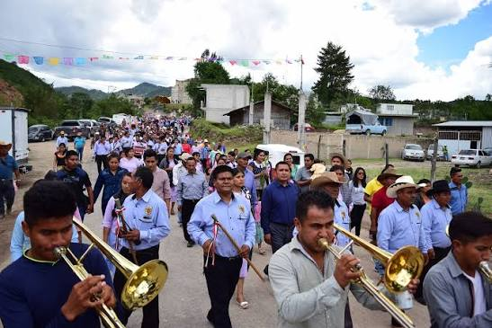
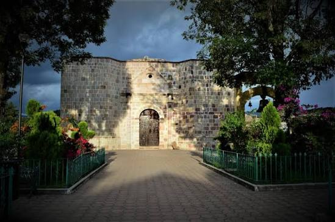
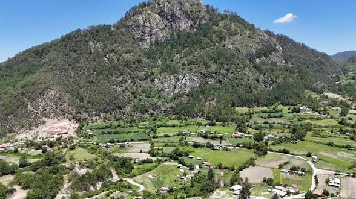

Magdalena Peñasco
Muñeca artesanal inspirada en la identidad cultural y vestimenta tradicional del pueblo mixteco de Magdalena Peñasco, Tlaxiaco Oaxaca.
Descripción
Esta pieza artesanal representa la riqueza cultural, tradiciones y vestimenta típica del municipio, preservando el patrimonio cultural de la Mixteca oaxaqueña.
Historia de la vestimenta tradicional
La vestimenta tradicional del lugar es la nahua de manta, sin embargo, la mayoría de la población ha dejado de usar la ropa típica y esta solo la utilizan en los días de mercado en el centro del municipio o en algunas de sus festividades que realizan en la agencia.
Aunque ahora han adoptado como ropa típica de las mujeres una blusa y falda de holanes, con colores particulares como rosa, verde y azul pastel con un estampado de cuadros pequeños o medianos, y huaraches de plástico.
Los hombres utilizan sombrero, camisa y pantalón de manta, huaraches de correa

Tradiciones, festividades y cultura
Magdalena Peñasco conserva una gran riqueza cultural reflejada en sus festividades religiosas, tradiciones comunitarias, gastronomía típica y música tradicional de la región mixteca.


Santa María Magdalena
Los días 21, 22 y 23 de julio se celebra la festividad en honor a Santa María Magdalena, acompañada de actividades religiosas, música y convivencia comunitaria.
Virgen de Guadalupe
Del 10 al 12 de diciembre se realizan celebraciones religiosas en la comunidad de Guadalupe.
Señor de las Peñas
El Quinto Viernes de Cuaresma se festeja al Santo Patrón Señor de las Peñas, una de las festividades más representativas del municipio.
Fiesta de San Isidro
Los días 13, 14 y 15 de mayo se celebra a San Isidro en Yosocahua, patrono de los agricultores.
Virgen de la Soledad
Los días 16, 17 y 18 de diciembre se realizan festividades religiosas en Pueblo Viejo en honor a la Virgen de la Soledad.
San Juan y Santo de los Remedios
El 24 de junio se celebra a San Juan, mientras que el 1 de septiembre y el cambio de año en San Juan del Río se festeja al Santo de los Remedios.
Día de la Santa Cruz
Los días 2 y 3 de mayo se celebra esta tradición religiosa en la comunidad de Cuesta Blanca.
Navidad y fin de año
El 24 y 25 de diciembre se celebra el nacimiento del Niño Dios y el 31 de diciembre junto con el 1 de enero se realizan convivios de fin de año.
Todos los Santos
Las familias elaboran altares y ofrendas para los difuntos, colocando tamales, comida y frutas tradicionales.
Gastronomía tradicional
Destacan platillos como mole de olla, frijoles de olla, comida de frijol molido y trigo revuelto con ejotes.
Música tradicional
La música de cuerda forma parte importante de las tradiciones, junto con música ranchera, chilena, grupera y de banda.
Estas tradiciones representan la identidad cultural y comunitaria de Magdalena Peñasco, preservando costumbres transmitidas de generación en generación.
Videos y contenido cultural

Rutas turísticas y atractivos culturales
Magdalena Peñasco cuenta con diversos atractivos turísticos, culturales y naturales que representan la identidad de la región mixteca y permiten conocer las tradiciones de sus comunidades.

Templo y campanas del pueblo
El templo principal del municipio fue construido a principios del siglo XX y forma parte importante de la historia y patrimonio cultural de Magdalena Peñasco.
Frente al templo se encuentra el conjunto de las tres campanas, reconocido por los habitantes como un símbolo tradicional de la comunidad.

Cerro el Gachupín
Uno de los principales atractivos naturales del municipio, ideal para apreciar los paisajes montañosos de la Mixteca.
Desde sus alturas se pueden observar distintas comunidades y gran parte del territorio de Magdalena Peñasco.
Cultura y tradiciones comunitarias
En el municipio se conserva la lengua mixteca y diversas actividades artesanales que forman parte de la identidad cultural de la región.
Museos y patrimonio cultural
Dentro del municipio también existen espacios donde se conserva y exhibe parte del patrimonio cultural y tradicional de la comunidad.